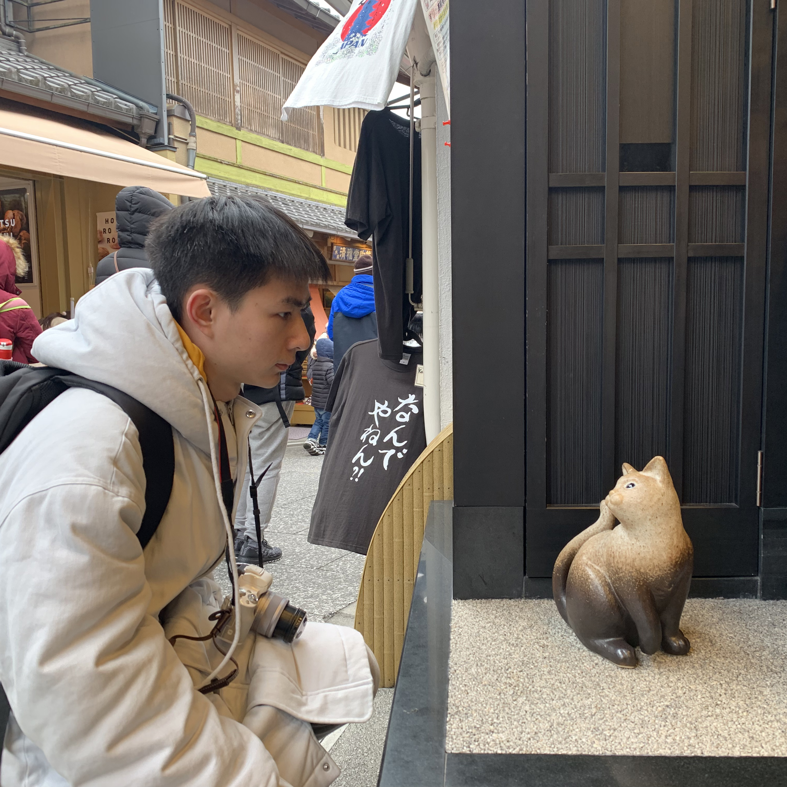

-
Ph.D. student, University of Wisconsin-Madison, United States, 2021;
-
Master of Arts in Education, Tsinghua University, China, 2018-2021;
-
Bachelor of Arts, Tsinghua University, China, 2014-2018;
-
Bachelor of Management, Tsinghua University, China, 2014-2018;
-
DEEp-Bridge exchange student, Tohoku University, Japan, 2016-2017.
|  |
WelcomeI am a Ph.D. student at the Information School, University of Wisconsin-Madison. I am currently studying topics related to the science of science and higher education productivity under Dr. Chaoqun Ni's supervision. I speak Mandarin Chinese, English, and Japanese. Email: xzheng246@wisc.edu [Metascience Research Lab@UW-Madison]
|